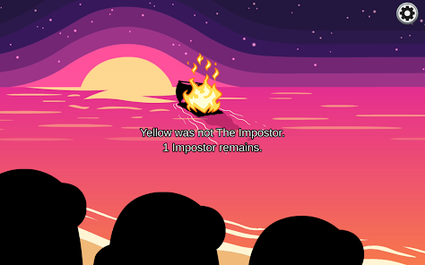
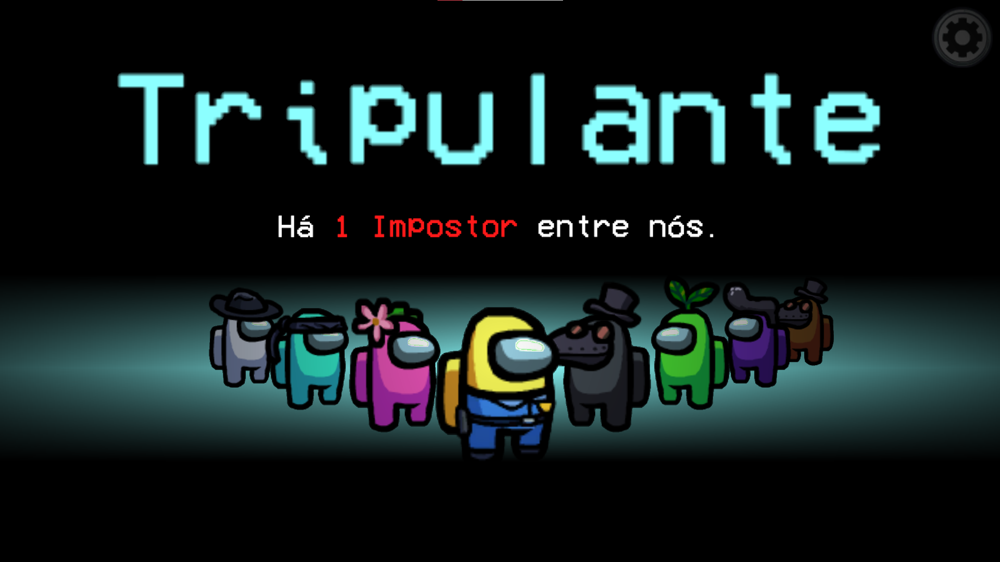
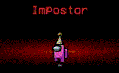

Como se tornar um PRO em: Among Us

O seu estilo de jogo muda completamente dependendo do qual é o seu papel na nave, pois cada um dos tipos de papel, mas há algo fundamental a qualquer um deles: Dialogar, interagir com os outros jogadores para conseguir atingir seus objetivos.
Sendo tanto um tripulante como um impostor é necessário manter a coerência em suas alegações e suas atitudes, pois nesse jogo falta de precisão ou credibilidade é o mesmo que ser derrotado.
Outro ponto importante é conseguir várias informações, informações que não são vistas em qualquer site ou lugar, mas a maioria não é capaz de as encontrar.
O caminho do tripulante... Cheio de aliados e desconfianças, mas certamente o papel mais inevitável e perigoso no jogo.
O caminho do impostor... solitário e complicado, mas certamente o papel mais desafiador e divertido no jogo.
Bem-vindo ao site sobre o jogo fenômeno: Among Us

Among Us é basicamente um jogo sobre observar os jogadores do jogo para descobrir um impostor entre eles. Claro, o jogo também tem como objetivo secundário as "tasks" ou "tarefas" que, ao serem completadas, o jogo é vencido (pelos tripulantes).
Mesmo com uma premissa simples e em muito também por isso, o jogo se tornou uma febre no mundo.
Claro, não só de tripulantes vive uma espaçonave, o jogo contava com um tipo de jogador que tinha um papel diferente dos demais: O Impostor.
O objetivo do impostor é ser o único na nave, e ele fará de tudo para alcançar esse objetivo, seja sabotando a nave até ela colapsar ou matando todos os tripulantes um a um.